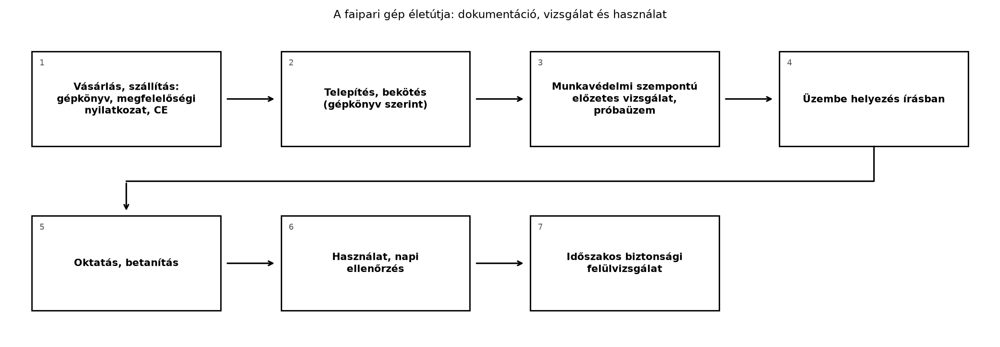

Képzeld el, hogy új asztalos körfűrészgép érkezik a tanműhelybe. A gép mellett ott a gépkönyv, a megfelelőségi nyilatkozat és a szerszámtartozék. Az oktató először nem az indítógombot nyomja meg, hanem a dokumentumokat ellenőrzi. Ez a sorrend nem bürokrácia, hanem biztonsági alapelv: a gép használata a papírokkal és a védőberendezések rendszerével kezdődik.
A faipari gép nem egyetlen kapcsolásból áll. A gép élete a dokumentációval kezdődik, üzembe helyezéssel, oktatással és vizsgálatokkal folytatódik.

Ábraolvasás. A folyamat elején a géphez kapcsolódó dokumentumokat ellenőrzik. Ezután a gépet a gépkönyv szerint felállítják és bekötik; az előzetes vizsgálat és a próbaüzem már a telepített gépen történik (rögzítés, villamos és elszívó-csatlakozás, vészleállító). Csak ezután helyezik írásban üzembe, és következik a kezelő oktatása. A használat közben napi ellenőrzés, évente vagy a szabályzat szerint időszakos felülvizsgálat következik.
A munkavédelemben munkaeszköznek nevezünk minden eszközt, amelyet munkavégzés közben használunk.
Definíció. Munkaeszköz. A munkavédelemről szóló törvény szerint minden gép, készülék, szerszám, berendezés, illetve ezek összekapcsolt rendszere, amelyet a munkavégzés során használnak (ellenőrizendő: a hatályos törvényszöveg pontos megfogalmazása).
A faipari műhelyben tehát a véső, a körfűrészgép, a szorítóléc, a porelszívó és a festőkamra egyaránt munkaeszköz. A gép ennek egy szűkebb halmaza.
Definíció. Gép. A gépekre vonatkozó uniós szabályozás szerint a gép olyan, legalább egy mozgó résszel rendelkező, hajtóenergiával ellátott vagy hajtóenergiával működtetett egység, amelyet meghatározott műveletre szereltek össze (ellenőrizendő: a gépirányelv/géprendelet pontos szövege).
A faipari gép például az asztalos körfűrészgép, az egyengető gyalugép, a vastagsági gyalugép, az alsómaró, a szalagfűrészgép, a fúrógép, a széles szalagú csiszológép, a prés és a CNC-megmunkálóközpont.
Definíció. Szerszám. A szerszám a munkaeszköz azon kisebb része, amely közvetlenül megmunkálja a faanyagot, és kézben tartva vagy gépre szerelve dolgozik.
A véső, a kézi fűrész, a gyaluvas, a körfűrészlap, a marószerszám, a fúrószár és a csiszolószalag szerszám. A szerszám a gép forgó vagy egyenes mozgást végző része, ezért a szerszám hibája gyakran balesethez vezet.
Definíció. Készülék. A készülék olyan munkaeszköz, amely a munkadarabot vagy a szerszámot megtámasztja, szorítja, vezeti vagy rögzíti, de önálló hajtása nincs.
A készülékek közé tartozik a szorítóléc, a csúsztató, a marósablon, a szorító, a fúrósablon, az ütköző és a gépasztalra szerelt vezetővonalzó. A készülék növeli a pontosságot és csökkenti a kéz közvetlen szerszámközeli elhelyezkedését.
Definíció. Berendezés. A berendezés olyan telepített vagy összetett munkaeszköz, amely általában kiszolgálja a gépet, vagy önálló munkafolyamatot végez.
Ilyen faipari berendezés a porelszívó rendszer, a légkompresszor, a festőkamra, a fűrészpor-tároló ciklon, a ragasztóprés és a fűtőcsatorna.
| Fogalom | Jellemző | Faipari példa |
|---|---|---|
| Munkaeszköz | Minden munkavégzéshez használt eszköz vagy rendszer | a műhely felszerelése |
| Szerszám | Kézben tartott vagy gépre szerelt, közvetlenül megmunkál | véső, körfűrészlap, marószerszám |
| Készülék | A munkadarabot vagy a szerszámot vezeti, rögzíti, önálló hajtás nélkül | szorítóléc, marósablon, vezetővonalzó |
| Gép | Hajtóenergiával mozgatott, mozgó részekkel dolgozó munkaeszköz | asztalos körfűrészgép, vastagsági gyalu |
| Berendezés | Telepített, gyakran kiszolgáló rendszer | porelszívó, kompresszor, festőkamra |
Szabály. A gépkönyv és a védőberendezések egymáshoz tartoznak. Védőberendezés nélkül, vagy a védőberendezés kiiktatásával a gép nem biztonságos munkaeszköz.
Definíció. Gépkönyv. A gépkönyv a gép gyártója által készített kötelező dokumentum, amely tartalmazza a gép rendeltetésszerű használatát, műszaki adatait, biztonsági előírásait, a szerszámadatokra vonatkozó korlátozásokat, a védőberendezések leírását, valamint a kezelési, szerelési, karbantartási és javítási útmutatót.
A gépkönyv a gép „használati utasítása”. A faipari gépkönyvben megtalálod például:
A gépkönyvet a felhasználó nyelvén, Magyarországon magyarul kell biztosítani (ellenőrizendő: a pontos nyelvi követelmény). A gép használata a gépkönyv utasításaitól eltérő módon tilos.
Szabvány. A gépek forgalomba hozatalát az Európai Unióban a jelenleg használt 2006/42/EK gépirányelv szabályozza; ezt fokozatosan váltja fel az új, (EU) 2023/1230 géprendelet, amely 2027. január 20-tól alkalmazandó (ellenőrizendő: a pontos átmeneti időpont). A gyártó a gépet ellátja CE-jelöléssel, és kiállítja az EK-megfelelőségi nyilatkozatot, az új rendelet szerint EU-megfelelőségi nyilatkozatot. A CE-jelölés nem minőségi tanúsítvány, hanem a gyártó nyilatkozata, hogy a gép megfelel a rá vonatkozó uniós biztonsági és egészségvédelmi előírásoknak. A munkáltató a gépet a munkavédelmi törvény és a munkaeszközök minimális biztonsági követelményeiről szóló miniszteri rendelet (10/2016. (IV. 5.) NGM rendelet – ellenőrizendő: hatályos szám) szerint csak munkavédelmi szempontú előzetes vizsgálat után helyezheti üzembe, és időszakos ellenőrző felülvizsgálatot kell végeznie. A gépbiztonság általános tervezési elveit az MSZ EN ISO 12100 szabvány foglalja össze (ellenőrizendő: jelölés).
Példa dokumentumfajtákra. Az asztalos körfűrészgép mellett a gyártó elkészíti az EK/EU-megfelelőségi nyilatkozatot, ráerősíti a CE-jelölést, és a gépbe építi az adattáblát. A gépkönyv külön fejezetei mutatják a védőburkolat, a hasítóék, a tolófa és az elszívó csatlakozás helyes használatát. A munkáltató ezek nélkül a dokumentumok nélkül nem adhatja át a gépet a tanulónak.
A gép üzembe helyezése nem azonos a bedugaszolással. A veszélyes munkaeszközt csak munkavédelmi szempontú előzetes vizsgálat után szabad üzembe helyezni (ellenőrizendő: Mvt. és a veszélyes munkaeszközök jegyzéke); a faipari gépek többsége ilyen. Minden más munkaeszközt is csak biztonságos állapotban, dokumentációval és működő védőberendezéssel szabad használatba venni.
Szabály. A munkaeszközt csak akkor szabad üzembe helyezni, ha a munkavédelmi szempontú előzetes vizsgálat igazolta, hogy a gép biztonságos, a dokumentumok rendelkezésre állnak, és a védőberendezések működnek.
Az előzetes vizsgálat során ellenőrizni kell például:
Definíció. Használatba vétel. A használatba vétel az a pillanat, amikor a munkavállaló a gépet a munkahelyén, a gépkönyv szerinti oktatás után ténylegesen munkavégzésre használhatja.
A használatba vétel feltétele a munkáltató által biztosított biztonságos állapot és a munkavállaló megfelelő betanítása, felügyelete.
Időszakos biztonsági felülvizsgálat. A munkaeszközöket rendszeresen ellenőrizni kell. A veszélyesnek minősülő gépeknél ez szigorúbb, dokumentált felülvizsgálatot jelent. A vizsgálat kiterjed a védőberendezések működésére, a biztonsági kapcsolókra, a villamos biztonságra, a mechanikai állapotra, a szerszámbefogásra és a kopó alkatrészekre. A gyakoriságot a kockázatértékelés, a gépkönyv és a vonatkozó jogszabály határozza meg (ellenőrizendő: a pontos időszak).
A munkáltató a kockázatértékelésben azonosítja a veszélyes munkaeszközöket. A faipari gépek többsége ebbe a csoportba tartozik, mert forgó szerszámmal, behúzásveszéllyel, visszacsapódással vagy nagy erővel dolgoznak.
Faipari veszélyes munkaeszközök például:
Szabály. A veszélyes munkaeszközökre a munkáltató köteles időszakos, dokumentált biztonsági felülvizsgálatot végeztetni, és a kezelőt külön ki kell oktatni. A faipari gépet csak betanított, felügyelt tanuló kezelheti.
Definíció. Veszélyforrás. A veszélyforrás olyan anyag, energia, mozgás vagy helyzet, amely kárt okozhat a munkavállaló egészségében, testi épségében vagy a környezetben.
A faipari gépen a legfontosabb veszélyforrások:
Definíció. Kockázat. A kockázat azt fejezi ki, milyen valószínű a veszély bekövetkezése, és milyen súlyos lehet a következménye.
A biztonságtechnika célja a kockázat csökkentése. A gép tervezője a veszélyes részt elburkolja, a munkáltató biztosítja a karbantartást és az oktatást, a kezelő pedig betartja a gépkönyv előírásait.
Megbízhatóság és meghibásodás. A védőberendezésnek akkor is biztonságosnak kell maradnia, ha meghibásodik. A biztonsági elemek hibájánál a gép ne hozzon létre újabb veszélyes állapotot. A tervezésben ezt hibabiztos kialakításnak nevezzük. Például ha a reteszkapcsoló meghibásodik, a gép ne induljon el, vagy azonnal álljon le.
A biztonsági megoldásokat két nagy csoportra osztjuk aszerint, hogy emberi beavatkozás nélkül hatnak-e.
Definíció. Feltétlenül ható biztonságtechnika. Olyan műszaki védelem, amely a veszélyes állapotot a gép működésétől függetlenül, automatikusan megszünteti vagy lehetetlenné teszi.
Példák:
Definíció. Feltételesen ható biztonságtechnika. Olyan védelem, amely csak akkor hat, ha az ember betart valamit, vagy beavatkozik.
Példák:
Megjegyzés. A feltételesen ható védelem gyengébb, mert emberi figyelmet igényel. Ezért a gép tervezésénél először feltétlenül ható műszaki megoldást kell keresni, és a szervezési, személyi feltételeket csak kiegészítésként szabad alkalmazni.
A baleset ritkán vezethető vissza egyetlen okra. A biztonságos gépnél három tényezőt kell együtt vizsgálni.
Konstrukciós tényező. A gép tervezéséből adódik. Ha a gép védőburkolat nélkül készül, vagy a kezelőelemek nehezen elérhetők, a kockázat már a gyártásnál beépül. A CE-jelölés és a gépkönyv ezt hivatott szabályozni.
Üzemviteli tényező. A gép telepítéséből, karbantartásából, ellenőrzéséből és a műhely rendjéből adódik. Ide tartozik a csúszós padló, a rossz világítás, a hiányzó elszívás, a túlterhelt hosszabbító, a kés alatt maradt szerszám.
Emberi tényező. A kezelő tudása, figyelme, fáradtsága, sietsége, a szabályok betartása. A legjobb gép is veszélyes, ha a kezelő a védőburkolatot eltávolítja, vagy a tolófa helyett kézzel tolja az anyagot.
Példa. Egy kirepülő munkadarabnál a konstrukciós hiba lehet a hiányzó hasítóék, az üzemviteli hiba a rosszul beállított párhuzamvezető, az emberi hiba pedig a túl rövid darab kézi tologatása. A baleset megelőzése ezért a gép, a környezet és az ember együttes ellenőrzését kívánja.
Gépbiztonság. A faipari gépet csak betanított, felügyelt tanuló kezelhet; a gépkönyv, a megfelelőségi nyilatkozat és a védőberendezések egy rendszert alkotnak. Védőberendezés nélkül, egyedül, fáradtan ne dolgozz. Indítás előtt ellenőrizd: a burkolatok rögzítve, a reteszek működnek, a vészleállító elérhető és üzemképes, a munkaterület szabad, az elszívó csatlakoztatva. Szerszámcsere, beállítás és karbantartás előtt a gépet kapcsold ki, áramtalanítsd, és várd meg, amíg a szerszám teljesen megáll. Tilos a retesz kiiktatása, a védőburkolat eltávolítása, a gépkönyv nélküli használat, és tilos a gépet oktatás nélkül átadni másnak.
A kezelőelemek közé tartozik a főkapcsoló, az indító- és leállítógomb, a vészleállító, a reteszelt burkolat kapcsolója, a fordulatszám-választó és a fék. A kezelőelemek környékét védett, jól látható helyen kell kialakítani, hogy véletlenül ne lehessen elindítani a gépet. A zöld az indítás, a piros a leállítás; a vészleállító piros, gomba alakú nyomógomb sárga háttéren, benyomás után reteszelődik, és csak szándékos visszaállítással oldható (ellenőrizendő: MSZ EN ISO 13850, MSZ EN 60204-1). A vészleállítónak a kezelőhelyről mindig elérhetőnek kell lennie.
A védőberendezések kialakítása faipari gépen:
Az ábra egy asztalos szalagfűrészen mutatja a felsorolt elemeket: 1 zárható főkapcsoló, 2 süllyesztett zöld indítógomb, 3 piros leállítógomb, 4 vészleállító, 5 rögzített burkolat a szíjhajtás felett (csak szerszámmal nyitható), 6 reteszelt kerékajtó (nyitáskor a reteszkapcsoló leállítja a motort), 7 állítható szerszámvédő, 8 fék, 9 elszívócsonk, 10 adattábla és gépkönyv. A rögzített és a reteszelt burkolat feltétlenül hat; a vészleállító és az állítható szerszámvédő csak akkor véd, ha a kezelő megnyomja, illetve helyesen beállítja.
A védőberendezésnek nem szabad szabadon hagynia a veszélyes zónát, de nem is akadályozhatja a biztonságos munkát.
Ergonómiai követelmények. A gép munkamagassága illeszkedjen a kezelő testméreteihez, a kezelőhely világítása legyen elegendő, a vágási pont jól látható legyen. A kezelőelemek kényelmesen elérhetők legyenek, a gép körül elegendő mozgástér maradjon. A zajterhelést, a porterhelést és a rezgést az egészségvédelmi határértékek között kell tartani.
A gépkönyvben megadott fordulatszámot mindig össze kell vetni a szerszámra ütött megengedett fordulatszámmal. Két egyszerű ellenőrző példát mutatok; a forgácsolási sebesség teljes levezetését a Forgácsolási és előtoló sebesség, fogankénti előtolás alfejezetben tanulod meg.
Számítás. A gép főorsó-fordulatszáma . A fűrészlapon a gyártó maximális fordulatszáma . A feltétel:
Mivel , a szerszám a gépre szerelhető. Ha a gép fordulata nagyobb lenne, mint a szerszámé, a szerszám szétrepülhetne.
Számítás. Egy körfűrészlap átmérője , a gép fordulatszáma . A kerületi sebesség:
A szerszám gyártója által megengedett kerületi sebesség például ; ez nagyobb, tehát biztonságos (ellenőrizendő: a konkrét szerszám adatlapja). Az ilyen számítások a gépek alfejezeteiben, a szerszámcsere előtt ismétlődnek.
Továbbvitt eredmény. A gépkönyv és a védőberendezések rendszere: a faipari gépek alfejezeteiben (V. rész) minden gépi technológiai lapnál ezt a rendszert alkalmazzuk. A gépkönyv adatai adják a megengedett fordulatszámot, szerszámátmérőt, karbantartási időközt, és meghatározzák a védőberendezés-kialakítást. A kockázatértékelés és az egészségvédelem Munkakörnyezeti hatások és kockázatértékelés: zaj, rezgés, fapor, vegyi anyagok, a villamos biztonság A villamosság biztonságtechnikája a faipari műhelyben, a gépbiztonsági részletes tárgyalás Faipari gépek biztonságtechnikája: veszélyek és védőberendezések alfejezetekben épül erre.
A gép biztonsági állapotát dokumentumokkal és szemrevételezéssel ellenőrizzük.
| Mit ellenőrzünk? | Mivel? | Elfogadható állapot |
|---|---|---|
| Gépkönyv, nyilatkozat, CE-jelölés | szemrevételezés, dokumentum | meglévő, olvasható, magyar nyelvű |
| Adattábla | szemrevételezés | típus, sorozatszám, fordulatszám látható |
| Reteszkapcsoló | burkolat nyitás | gép nem indul vagy azonnal leáll |
| Vészleállító | nyomógomb benyomás | gép leáll, a gép nem indul vissza automatikusan |
| Védőburkolat, hasítóék | szemrevételezés | nincs repedés, hiány, rögzítve van |
| Szerszámbefogás | kézi ellenőrzés, kulcs | a szerszám rögzítve, nincs repedés |
| Elszívócsatlakozás | próbaüzem | szívás működik, a cső nem dugult |
| Zaj, rezgés | fül, kéz | nem változott rendellenesen a korábbihoz képest |
Eltérésnél a gépet nem szabad használni, amíg a hibát szakember meg nem javítja. A vizsgálat eredményét a munkanaplóban vagy a karbantartási lapon rögzíteni kell.
Hiba 1: hiányzó gépkönyv. Tünet: a használt géphez nincs használati útmutató. Ok: a gép korábbi tulajdonosa elvesztette, vagy külföldről hozták. Helyes gyakorlat: a gépkönyvet pótolni kell a gyártótól vagy a forgalmazótól, és üzembe helyezés előtt be kell szerezni.
Hiba 2: a reteszkapcsolót ragasztószalaggal leragasztják. Tünet: a védőburkolat nyitva is futtatható. Ok: a kezelő kényelmesebb, gyorsabb munkát akart. Helyes gyakorlat: a reteszt soha nem szabad kiiktatni; a munkát a gépkönyv szerint, védőberendezéssel kell végezni.
Hiba 3: a vészleállító portól beragad. Tünet: a gomb nehezen mozdul, nem állítja le a gépet. Ok: karbantartás hiánya. Helyes gyakorlat: a vészleállítót rendszeresen tisztítani és próbával ellenőrizni kell.
Hiba 4: a gépkönyv szerinti karbantartás elmarad. Tünet: kopott szíj, száraz csapágy, életlen szerszám. Ok: időhiány, nem ismert karbantartási terv. Helyes gyakorlat: a gépkönyv szerinti kenési és karbantartási időközöket dokumentáltan be kell tartani.
Egy kis műhelyben használt asztalos körfűrészgépet vásároltak. A gépkönyv hiányzott, a védőburkolat reteszkapcsolója ki volt iktatva, a hasítóék pedig nem volt a helyén. A munkáltató a gépet mégis használatba akarta venni. Az első biztonsági szemlén kiderült, hogy nem tudja igazolni a munkavédelmi előzetes vizsgálatot, és a gép védőberendezései hiányosak. A gépet leállították. A gyártótól pótolták a gépkönyvet, szakember visszaállította a reteszt és a hasítóéket, majd elvégezték az előzetes vizsgálatot. A kezelő csak ezután kapott oktatást. A tanulság: a hiányzó dokumentáció és a kiiktatott védelem egyszerre növeli a baleset és a hatósági elmarasztalás kockázatát. A gép nem az árával, hanem a dokumentációjával és a védőberendezéseivel válik biztonságos munkaeszközzé.
A válaszokat a Megoldások szakasz elején találod.
1. feladat (A). Sorold be a következőket: kézi körfűrész, szorítóléc, asztalos körfűrészgép, porelszívó berendezés. Melyik szerszám, készülék, gép, berendezés?
2. feladat (A). Írd le, mi a munkavédelmi szempontú előzetes vizsgálat célja, és sorolj fel négy ellenőrzendő tételt.
3. feladat (B). Egy gépkönyvben a főorsó fordulatszáma . A szerszámon a gyártó megengedett fordulatszáma . Megengedhető-e a szerszám használata? Indokold.
4. feladat (B). Készíts 6 pontos ellenőrzőlistát egy új asztalos marógép üzembe helyezés előtti vizsgálatához.
5. feladat (C). Hibaelemzés: a gép burkolatának nyitásakor a motor nem áll le, de a vészleállító működik. Mi a valószínű hiba? Mi a kockázat? Mi a teendő?
6. feladat (D). Készíts tételes ellenőrzőlistát egy használt asztalos körfűrészgép vásárlás előtti vizsgálatához. Legalább 8 tételt adj meg; mindegyiknél írd le, mit ellenőrzel és mi a megfelelő állapot.
1. feladat. Kézi körfűrész: motoros kézi gép, tehát gép. Szorítóléc: készülék. Asztalos körfűrészgép: gép. Porelszívó berendezés: berendezés.
2. feladat. Az előzetes vizsgálat célja, hogy a gépet csak biztonságos állapotban, a dokumentumok és védőberendezések ellenőrzése után helyezzék üzembe. Ellenőrzendő: gépkönyv megléte, CE-jelölés, védőburkolat és reteszkapcsoló, vészleállító működése, szerszámbefogás, elektromos csatlakozó és elszívó.
3. feladat. A gép fordulata , a szerszámé . A gép fordulata nagyobb, mint a szerszám megengedett értéke, ezért a szerszámnak a gépen tilos járnia; a szerszám szétrepülhet, a gépkönyvet és a szerszámot egyeztetni kell.
4. feladat. Példa ellenőrzőlistára:
1. gépkönyv és megfelelőségi nyilatkozat megléte,
2. CE-jelölés és adattábla olvashatósága,
3. védőburkolat rögzítése; retesz próbája nyitásnál,
4. vészleállító működése,
5. szerszámbefogás és a megengedett fordulatszám összevetése,
6. villamos csatlakozó, kábelek, főkapcsoló és a gép stabilitása.
5. feladat. A valószínű hiba a reteszkapcsoló meghibásodása vagy kiiktatása. A kockázat: a gép a burkolat nyitva hagyásakor is fut, a forgó szerszám elérhető, vágás vagy behúzás következhet be. Teendő: a gépet azonnal le kell állítani, használatát tilos folytatni, a reteszt szakemberrel meg kell javíttatni, és csak dokumentált javítás után szabad üzembe helyezni.
6. feladat. Például:
1. Gépkönyv, nyilatkozat, CE-jelölés – meglévő, olvasható.
2. Adattábla – típus, sorozatszám, fordulatszám látható.
3. Védőburkolat, hasítóék, takarósapka – nincs hiány, repedés.
4. Reteszkapcsoló – burkolat nyitásakor a gép nem indul.
5. Vészleállító – benyomásra a gép leáll.
6. Fűrészlap – repedésmentes, a tengelyen rögzített, a megengedett
fordulata nagyobb a gépénél.
7. Elektromos kábel, csatlakozó, főkapcsoló – ép, nem szakadt, nem
túlmelegedett.
8. Asztallap, párhuzamvezető, tolófa – mozgatható, nem repedt, a vezető
rögzíthető.
9. Elszívócsatlakozás – kiépített, csatlakoztatható.
10. Stabilitás – a gép nem billeg, talapzata rögzíthető.
A munkaeszköz minden munkavégzéshez használt gép, szerszám, készülék, berendezés vagy rendszer. A gép hajtóenergiával mozgatott, mozgó részekkel dolgozó munkaeszköz; a szerszám a közvetlen megmunkáló rész; a készülék vezető, rögzítő eszköz; a berendezés telepített kiszolgáló rendszer. A géphez kötelezően tartozik gépkönyv, EK/EU-megfelelőségi nyilatkozat és CE-jelölés. A munkáltató csak munkavédelmi szempontú előzetes vizsgálat után helyezheti üzembe a gépet, majd használatba vétel előtt ki kell oktatni a kezelőt. A veszélyes gépeken időszakos, dokumentált biztonsági felülvizsgálat kell. A biztonságtechnika feltétlenül ható, ha automatikusan véd, és feltételesen ható, ha emberi beavatkozást igényel. A balesetek hátterében konstrukciós, üzemviteli és emberi tényezők együtt hatnak. Ezt a rendszert használjuk a Faipari gépek biztonságtechnikája: veszélyek és védőberendezések alfejezetben és a V. rész gépeinél.
Felhasznált forrástípusok: munkavédelmi törvény (1993. évi XCIII.); 2006/42/EK gépirányelv; (EU) 2023/1230 géprendelet; 10/2016. (IV. 5.) NGM rendelet (munkaeszközök minimális biztonsági követelményei; ellenőrizendő: hatályos szöveg); MSZ EN ISO 12100 gépbiztonsági alapszabvány; gyártói gépkönyvek és megfelelőségi nyilatkozatok. Ellenőrizendő: a hatályos jogszabályi hivatkozások pontos számai, a géprendelet átmeneti időpontja, az időszakos felülvizsgálat pontos gyakorisága, a vészleállító és a kezelőelemek színjelölésére vonatkozó szabvány, valamint a konkrét gyártói fordulatszám- és sebességadatok.